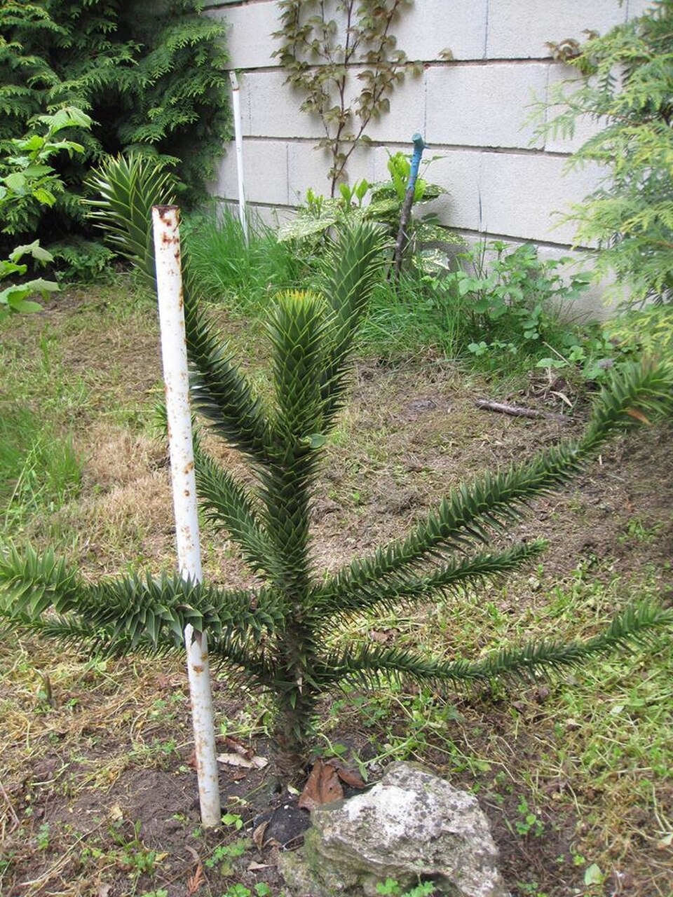
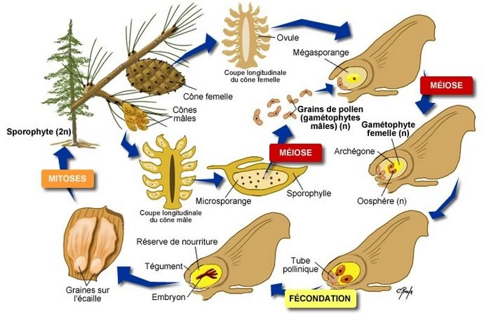
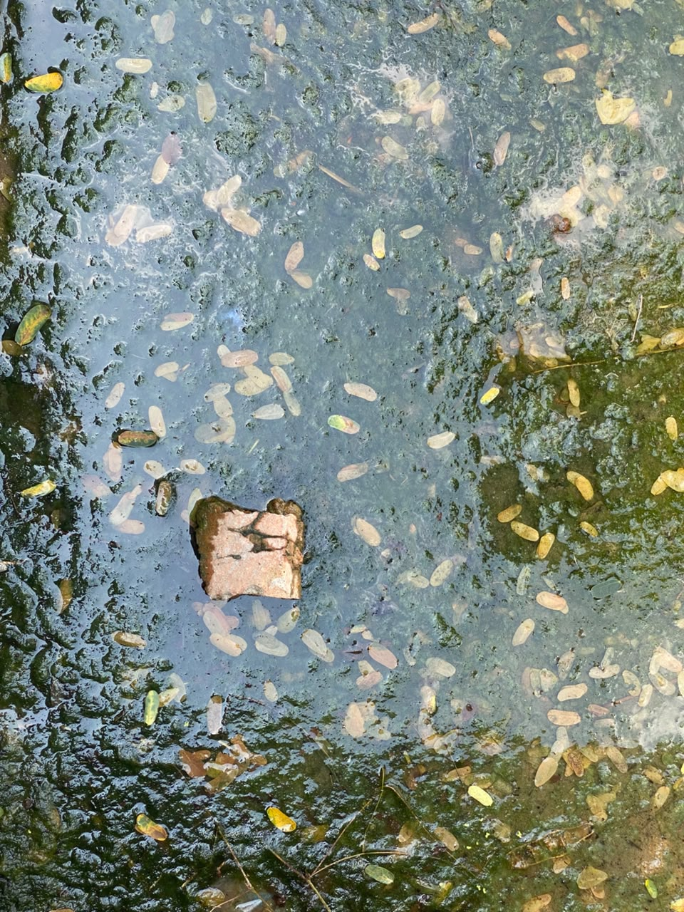

Conifères
>, environ 370 Ma ° Dénovien
Le problème que ce groupe a resolu
Se produire sans eau libre: le pollen, l'ovule protégé et la graine nue apparaissent chez les gymnospermes(conifères,cycas).
Appareil végétatif

Sporophyte avec vaisseaux et bois. Le gametophyte est réduit à quelques cellules.
Reproduction

Le pollen transporte le gamète mâle par l'air. La graine est nue, posée sur une écaille. La pomme de pin n'est pas un fruit.
Observé sur le terrain
